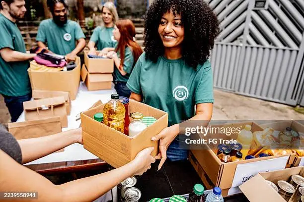

Alimentação solidária
Distribuímos cestas básicas mensais para 500 famílias em situação de vulnerabilidade.
Pequenas ações, grandes transformações

A ONGDoSamuka nasceu em 2020 com a missão de conectar doadores a comunidades carentes. Atuamos em três frentes: distribuição de alimentos, oficinas de capacitação profissional e apoio psicológico gratuito.
Já impactamos mais de 2.000 famílias e contamos com uma rede de 150 voluntários. Acreditamos que pequenas ações transformam vidas.
Distribuímos cestas básicas mensais para 500 famílias em situação de vulnerabilidade.
Cursos gratuitos de informática e empreendedorismo para jovens da periferia.
Endereço: Rua da Esperança, 123 – Centro, São Paulo – SP
Telefone: (11) 99999-9999
E-mail: contato@ongdosamuka.org
Horário: Seg–Sex, 9h às 18h